DAY BY DAY
每日行程
9 天 · 点卡片展开🎯 全程公共交通、独行、以早期木构与彩塑壁画为主线。硬约束只有一个：10/5 傍晚必须赶上高平东 20:14 的 D315，那是 10/6 返程的前置。
D19/28
杭州 → 运城直飞已出票 · 落地打车进市区
▾
D19/28
杭州 → 运城
直飞已出票 · 落地打车进市区
▾
10:10
到杭州萧山 T3，提前 2 小时
出发前 48h 在线值机；机场今明有强对流，出门留余量
12:10
✈️ ZH8158 杭州 12:10 → 运城 14:20已出票
¥1010 ｜ 20kg 托运 ｜ 飞行约 2h10m
14:40
🚕 运城机场 → 市区无机场大巴
打车 15.3 km / 约 15 分钟 / ¥30–36；公交 56·24 路 → 运城北站方向（06:30–19:30），66 路 → 盐化二厂，能到但要绕
16:00
🏨 入住 汉庭（运城槐东路店）已订
9/28–9/30 共 2 晚 ｜ ¥358.04 在线付 ｜ 盐湖区槐东路，近南风广场
全天
☔ 有雨：杭州毛毛雨 → 运城小雨
带伞；落地后别安排远点，市区吃饭休整即可
D29/29
运城 · 西南线关帝祖庙 + 永乐宫 + 广仁王庙
▾
D29/29
运城 · 西南线
关帝祖庙 + 永乐宫 + 广仁王庙
▾
07:30
🚐 一日游上门接送已订
携程 ¥115 ｜ 2–6 人拼包车，一天把运城西南片打完
全天
📍 解州关帝祖庙 → 永乐宫 → 广仁王庙 → 城隍庙 → 寿圣寺
市区→关帝庙 23.6 km / 36 分钟（打车）；公交 14+21 路 1h44m / ¥4
18:00
回市区 · 宿汉庭槐东路店
⚠️ 出发前确认成团；不成团则包车/打车往返
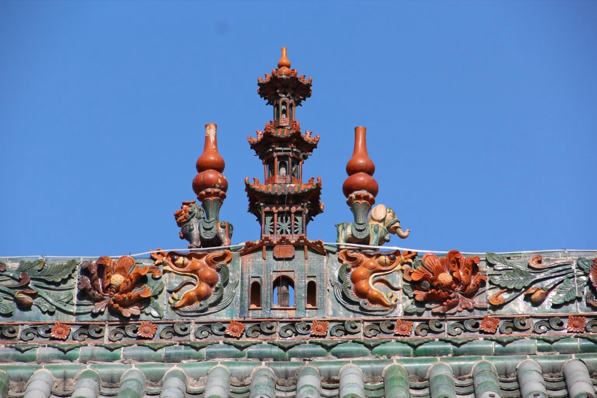
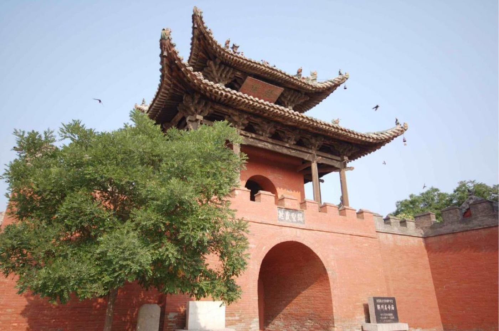
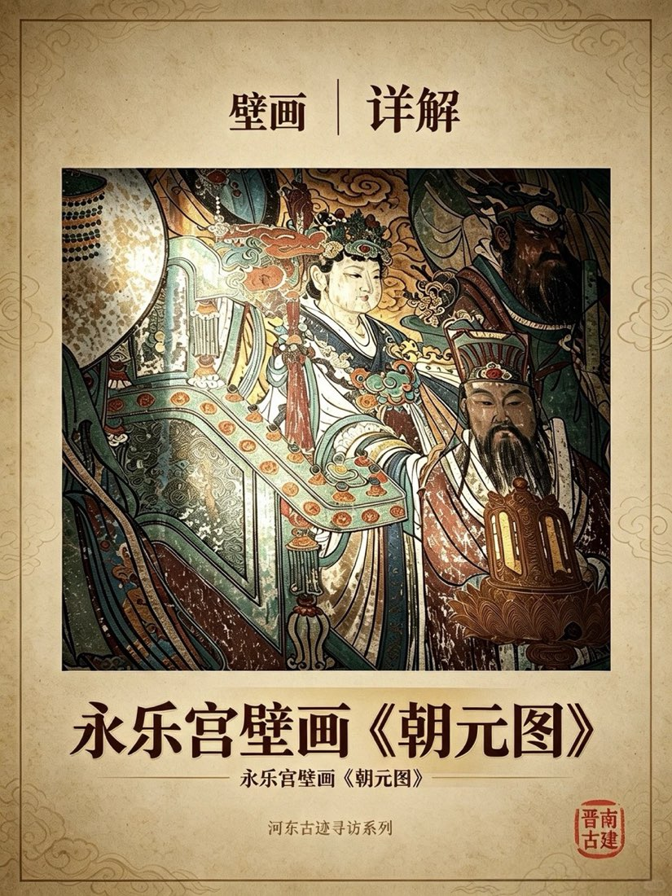
👀 重点看：三清殿《朝元图》——286 尊神祇列队朝拜，元代壁画天花板（主像高过 2 米、700 年不褪色）。室内禁拍照、需套鞋套，出殿后的临摹室可拍高清摹本。广仁王庙看唐代斗拱与梁架，现存最早的道教木构之一。
D39/30
运城 → 临汾上午机动 · 午后高铁
▾
D39/30
运城 → 临汾
上午机动 · 午后高铁
▾
09:00
🏛 上午机动：运城博物馆
9:00–17:00，16:00 停止入馆；常规周一闭馆——9/30 是周三，可去
13:20
🚕 市区 → 运城北站
8.5 km / 9 分钟 / 约 ¥21；公交 16·24 路直达市中心方向
14:21
🚄 G2620 运城北 14:21 → 临汾西已支付
二等座 07 车 05C ｜ ¥39
15:40
🏨 临汾住宿你已安排
临汾西站 → 市区：5 路（06:10–18:30，每 9 分钟，¥1）/ 6 路 / 7 路
D410/1
临汾 · 洪洞广胜寺飞虹塔 + 水神庙元代壁画
▾
D410/1
临汾 · 洪洞广胜寺
飞虹塔 + 水神庙元代壁画
▾
08:00
🚗 临汾 → 广胜寺
41.7 km / 54 分钟；或 洪洞西站 → 广胜寺 直通车 ¥2（09:30 首班）
全天
🎟 广胜寺（上寺 + 下寺）两笔 ¥58 待核
携程有"一日游 ¥58"和"门票 ¥58"两笔同价订单，出发前核对是否重复下单，可退一笔
18:00
返回临汾 · 宿（你已安排）
⚠️ 返程叫车能力需现场确认；这是全程唯一的接驳缺口
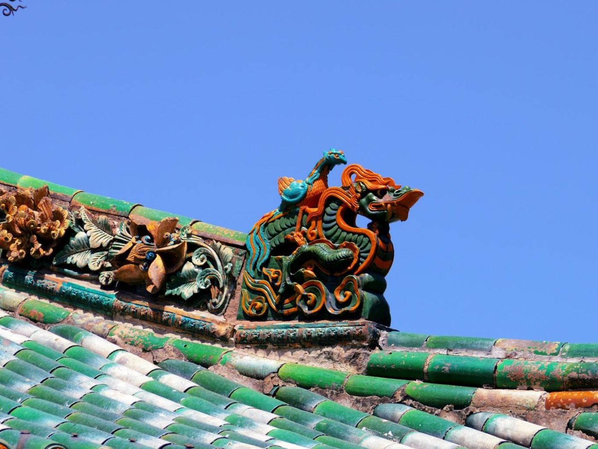
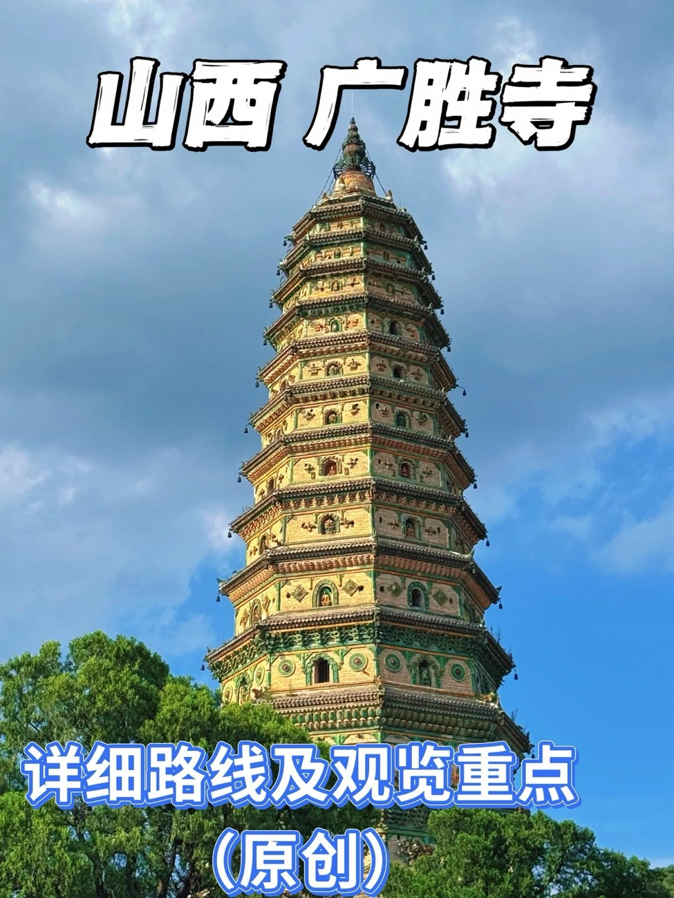
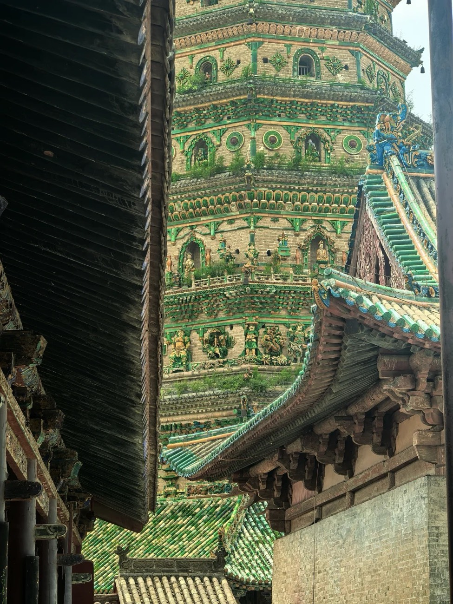
👀 重点看：飞虹塔——全国保存最完整的琉璃塔，外壁通体琉璃构件，绕塔一周细看佛龛与色彩层次；下寺水神庙元代壁画《打球图》与《大行散乐忠都秀在此作场》（中国戏曲史的孤本级证据）。上下寺有高差，穿防滑鞋。
D510/2
临汾 → 太原南 → 长治经太原换乘（两市无直达）
▾
D510/2
临汾 → 太原南 → 长治
经太原换乘（两市无直达）
▾
08:40
到临汾西站
临汾西站离市区约 7.8 km
09:12
🚄 G622 临汾西 09:12 → 太原南已改签有效
二等座 07 车 13D ｜ ¥82（9.6 折）｜ 到太原南 10 点多
11:10
🚄 G3135 太原南 11:10 → 长治东已改签有效
二等座 16 车 04D ｜ ¥105 ｜ 太原南换乘约 1 小时，同站不必出站
13:00
🚕 长治东站 → 市区站离市区约 9 km
打车 ¥22–40；站前公交约 10 条日间线 + 3 条夜间线（2026-09 新增），老长治站走 311 转 202 路
14:00
🏨 长治住宿你已安排
⚠️ 把酒店准确名称+地址发给 10/3 跟团商家（要上门接）
D610/3
长治 · 浊漳河谷天台庵 + 大云院 + 龙门寺 + 原起寺
▾
D610/3
长治 · 浊漳河谷
天台庵 + 大云院 + 龙门寺 + 原起寺
▾
08:00
🎧 古建讲师全程讲解（上门接）已订
¥378 ｜ 长治市区酒店接送 ｜ 平顺方向，车程较长，带水和小食
全天
📍 浊漳河谷：中国早期木构的走廊
天台庵（唐构）→ 大云院（五代壁画）→ 龙门寺（一寺跨六朝）→ 原起寺
18:30
回长治 · 宿（你已安排）
看点门槛高、讲解含金量大，建议准备好提问
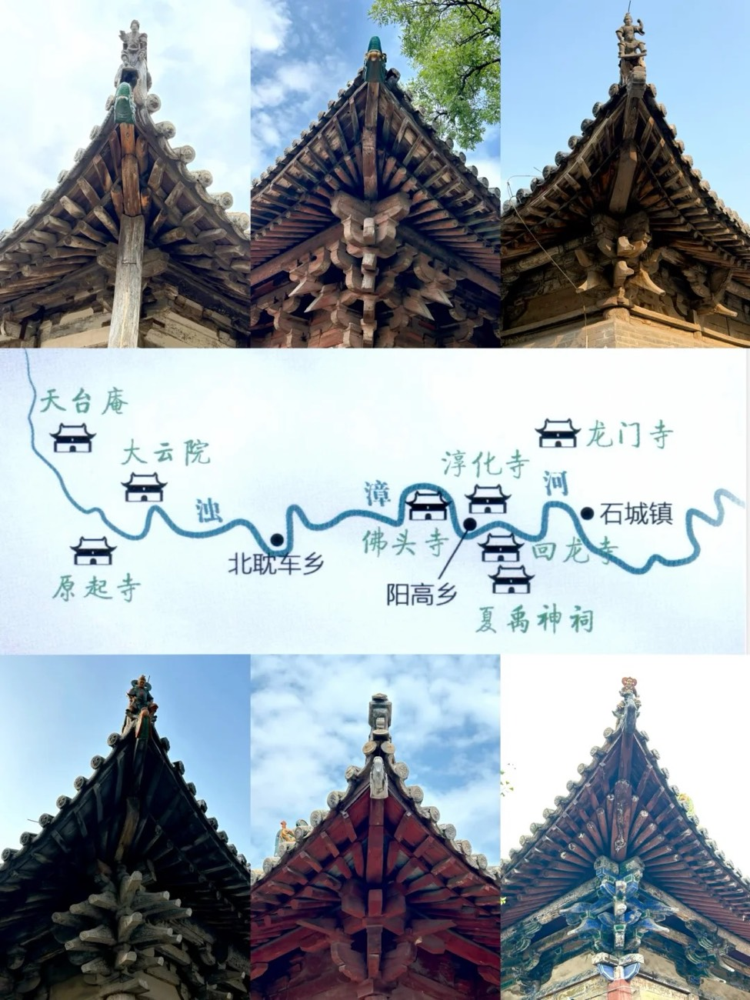
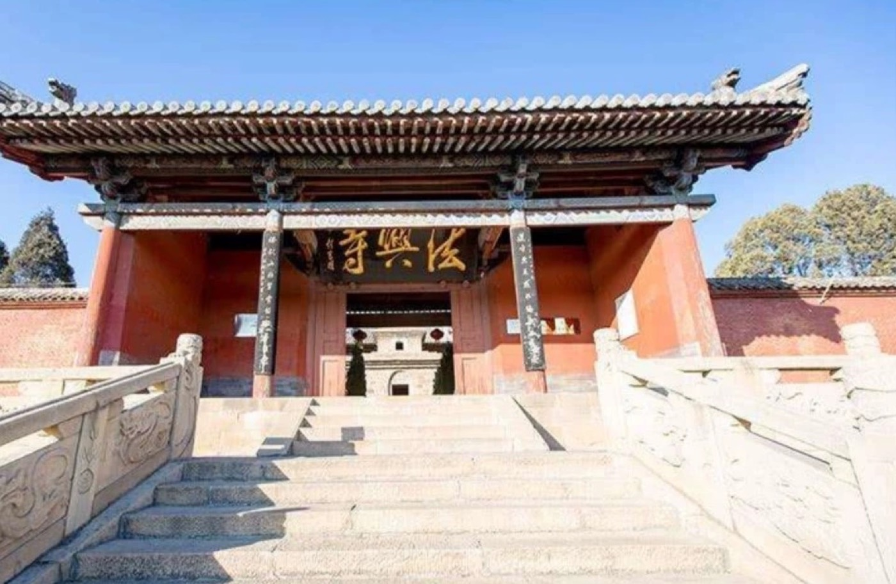
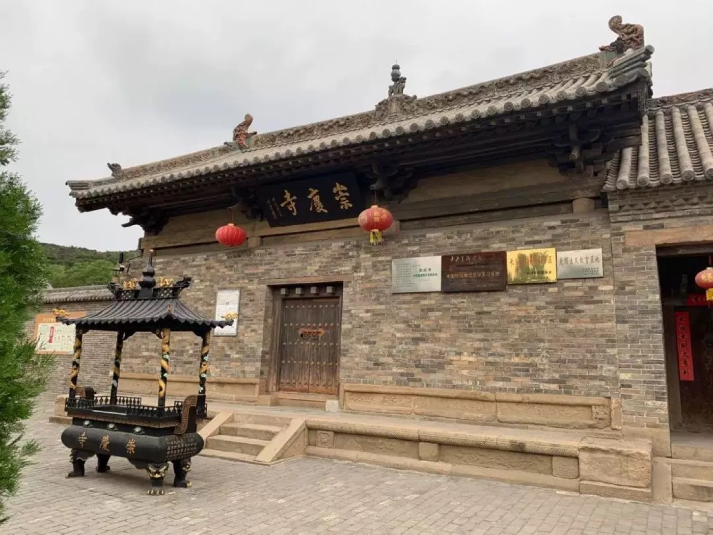
D710/4
长治 → 晋城博物馆 + 晚间打铁花
▾
D710/4
长治 → 晋城
博物馆 + 晚间打铁花
▾
09:30
到长治东站
市区 → 长治东约 9 km / 打车 9 分钟
10:01
🚄 G3845 长治东 10:01 → 晋城东已支付
二等座 04 车 09C ｜ ¥44
11:00
🚕 晋城东站 → 市区
19 路 → 晋城火车站、55 路 → 人民广场；市内公交 1 元。16.1 km / 打车约 17 分钟 / ¥38
13:00
🏛 晋城博物馆需预约
"晋城博物馆"公众号预约 ｜ 国庆 10/1–10/7 延时 09:00–18:00（17:30 停入） ｜ 夜场仅 10/1
看点：镇馆之宝北齐昙始造像石——看青莲寺前先看这里
看点：镇馆之宝北齐昙始造像石——看青莲寺前先看这里
17:30
🍜 南大街 / 老城吃晚饭
离博物馆不远，顺看景德桥、景忠桥
20:00
🔥 司徒小镇《千年铁魂》打铁花需买票
4A，晋城本地人推荐榜第 1 ｜ 省级非遗打铁花（1600℃）+ 45 分钟山水实景演出 ｜ 约 19:30–20:30 开演，提前 0.5–2h 占座 ｜ 城区北石店镇，万达打车 15–20 分钟
22:00
🏨 入住 华之晋酒店（晋城万达广场店）已订
10/4–10/5 1 晚 ｜ ¥322 ｜ 文峰路，紧邻晋城万达广场（次日跟团集合点）
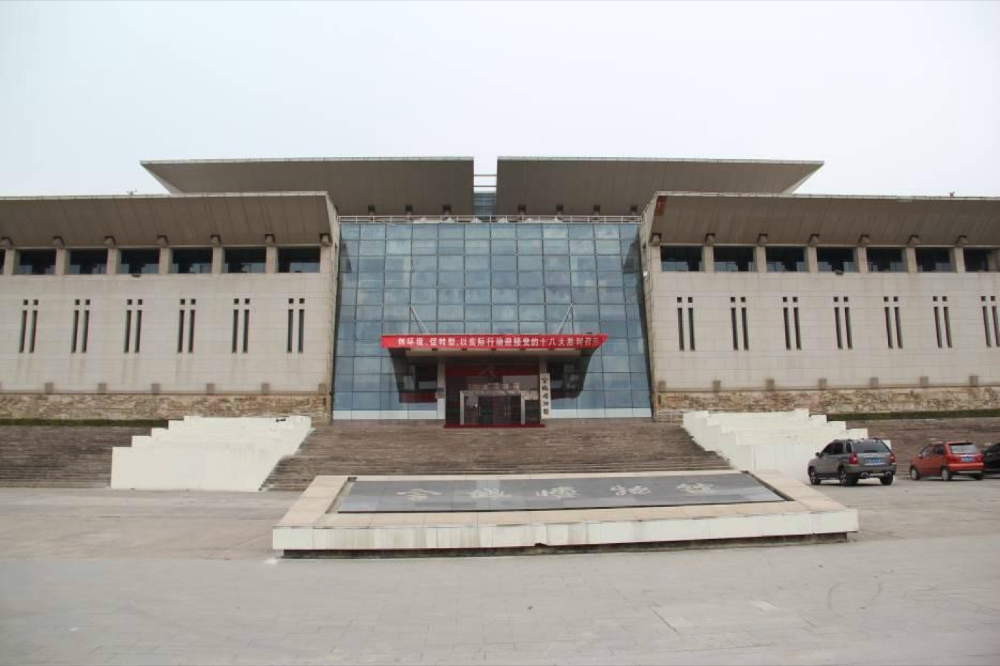
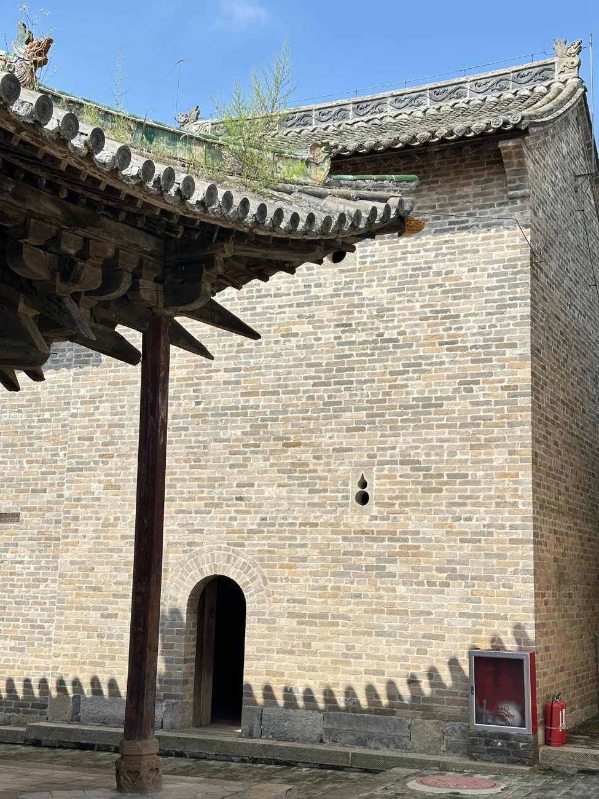
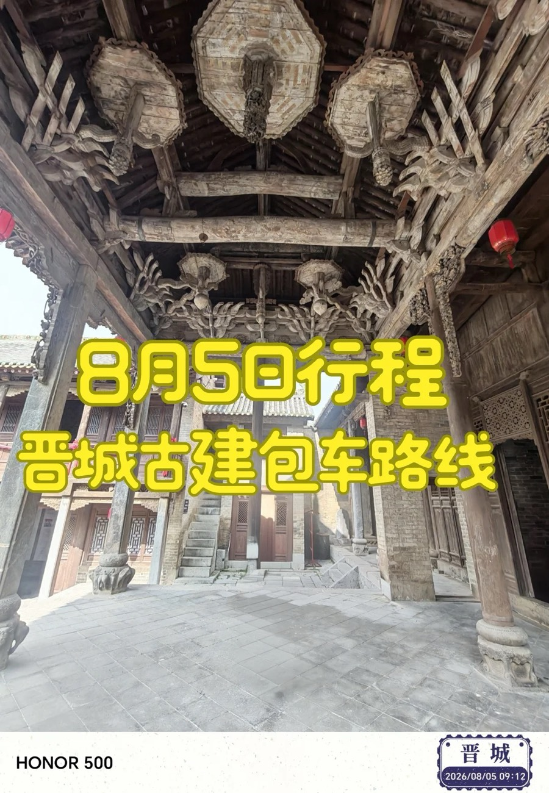
D810/5
晋城跟团 → 高平 → 郑州四大孤品一天打完，晚上转场
▾
D810/5
晋城跟团 → 高平 → 郑州
四大孤品一天打完，晚上转场
▾
07:30
🎧 晋城万达 KFC 集合时间待确认
携程 ¥398 ｜ 专业古建讲师带队 ｜ 务必先问清集合时间（决定你几点起床）
全天
📍 青莲寺 → 小南村二仙庙 → 府城玉皇庙 → 高平铁佛寺
四大孤品打包：唐塑 · 宋代小木作 · 元塑 · 明塑。问清 4 个点位预约是否团里代办（铁佛寺限 500/日）
18:30
🚗 高平东站散团
确认散团点就是高平东；预留 1 小时余量吃口饭再上车
20:14
🚄 D315 高平东 20:14 → 晋城东 20:24 → 郑州站 21:34一票到底
两段是同一趟车、不用下车 ｜ 高平东→晋城东 ¥11（03 车 05D）＋ 晋城东→郑州 ¥59（02 车 16A）
⚠️ 晋城东只停 8 分钟，上车后尽快从 03 车换到 02 车
⚠️ 晋城东只停 8 分钟，上车后尽快从 03 车换到 02 车
21:50
🚇 郑州站 → 农业南路别拖到没车
地铁 1 号线直达（郑州火车站站上）9 站约 25 分钟，不用换乘；打车约 20–25 分钟 ¥30–40。1 号线末班到 23:53
22:20
🏨 入住 锦江之星（郑州高铁东站郑东万象城店）已订
10/5–10/6 ｜ 农业南路 106 号，农业南路站 C 口步行约 5 分钟；距郑州东站 2 站
备注
⚠️ 晚饭别拖到郑州
郑东万象城 22:00 闭店，你到酒店已过 22:20——建议晚饭在晋城/高平解决，或买好带上车
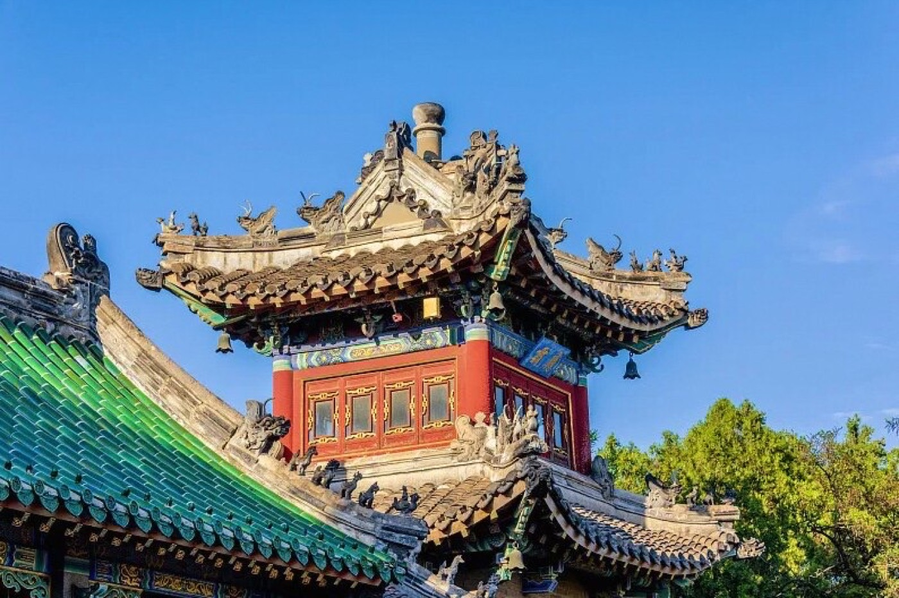
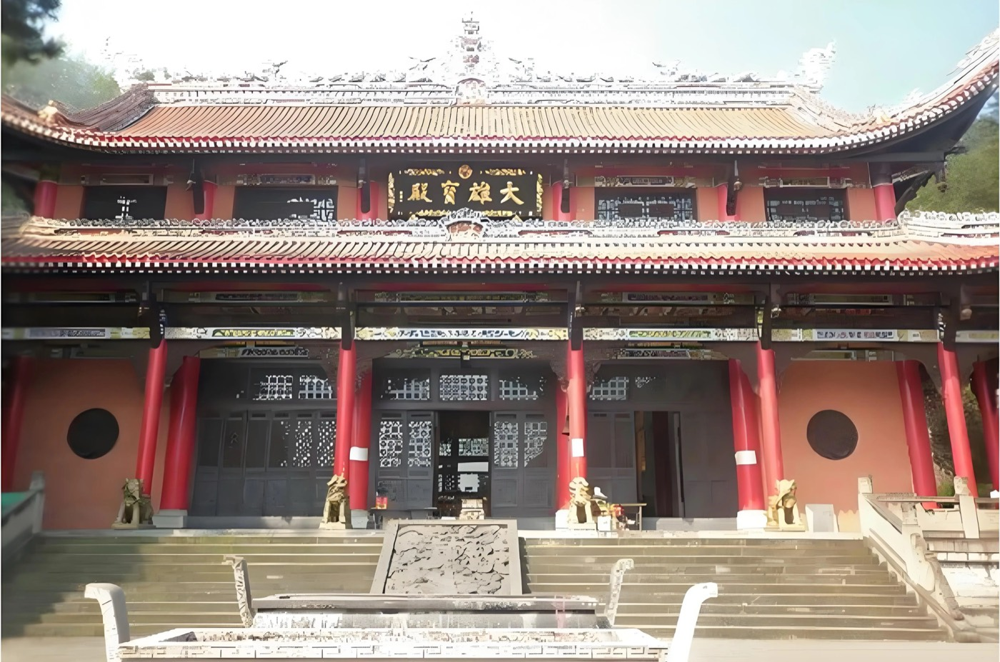
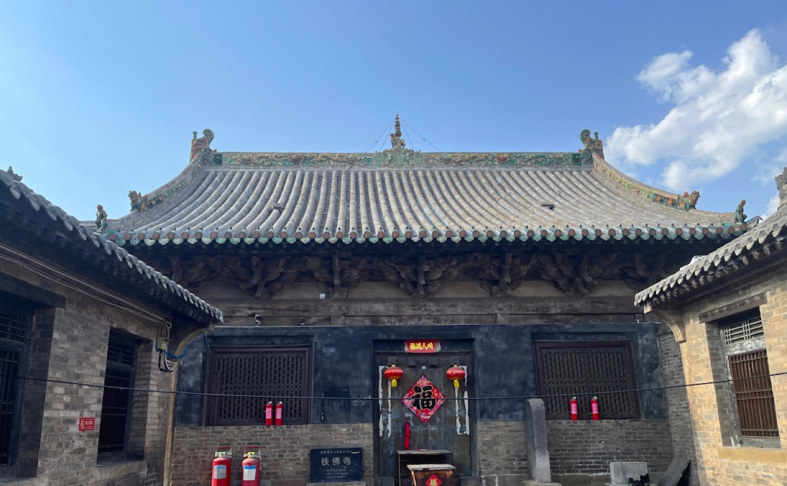
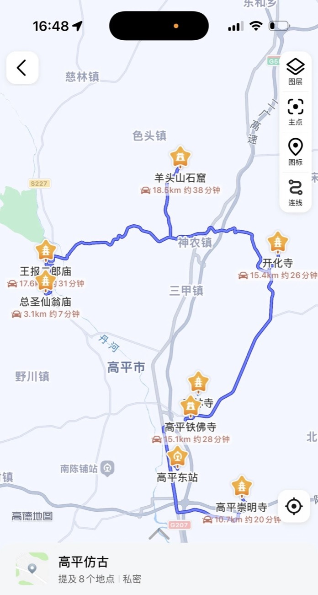
D910/6
郑州 → 杭州郑州东出发 · 芜湖换乘
▾
D910/6
郑州 → 杭州
郑州东出发 · 芜湖换乘
▾
08:45
出门去郑州东站
农业南路站 → 郑州东站 2 站约 5 分钟（农业南路站首班 06:06）；打车约 8 分钟
09:20
郑州东站进站
国庆返程人多，留 50 分钟安检 + 找站台
10:11
🚄 G2238 郑州东 10:11 → 芜湖无座（保底）
12 车 ｜ ¥386.5 ｜ 上车后尽早找空座，或找乘务员问空座
13:33
🚄 G2235 芜湖 13:33 → 杭州西已支付
04 车 15F ｜ ¥143 ｜ 到杭州即全程结束
备选
🔔 候补兑现就早点走
G1967 07:28（成功率 75%）/ G2390 11:31（35%）｜ 候补截止：开车前 6 小时，凌晨别开静音
ALTERNATIVES
10/4 晚间备选
2 项🥈 南大街夜市 + 老城夜游
免费
📅 玉皇庙广场惠民演出
10/1–10/5
点每张日卡展开细节；底部标签可切换「看点 / 交通 / 住宿 / 待办 / 装备」。
MUST–SEE
必看古建
12 处 · 按城市🎯 全线只挑早期木构与彩塑壁画：唐构、宋塑、元塑、元壁画各占一角。下面按城市分组，每组标了预约渠道与开放时间，能配实拍的都配了图。
YUNCHENG · D2
运城 · 芮城线
2 处永乐宫必看旺季限流
国保 ｜ 元代《朝元图》壁画 · 中国壁画巅峰
👀 重点看：三清殿《朝元图》——286 尊神祇列队朝拜，主像高过 2 米、色彩 700 年不褪；纯阳殿连环画式叙事壁画、重阳殿看王重阳生平。
预约景区公众号 / OTA 确认，旺季常限流
禁忌殿内禁拍照、需套鞋套；出殿后临摹室可拍高清摹本
解州关帝庙必看
国保 ｜ 全国规模最大的关帝庙（"武庙之祖"）
👀 重点看：中轴六进 端门 → 雉门 → 午门 → 御书楼 → 崇宁殿 → 春秋楼；春秋楼二层回廊是明代"吊柱"悬空做法；庙前琉璃影壁别错过。
交通市区打车 23.6 km / 36 分钟；公交 14+21 路 1h44m / ¥4
广仁王庙免费/低价
国保 ｜ 现存最早的道教木构之一（唐构）
👀 重点看：正殿唐代斗拱与梁架——全国唐代木构只剩几座，这是"看唐构"的稀有机会。体量小，30 分钟够，含金量极高。
LINFEN · D4
临汾 · 洪洞
2 处广胜寺（上寺 + 下寺）必看接驳待定
国保 ｜ 飞虹塔 + 水神庙元代壁画
👀 重点看：飞虹塔——全国保存最完整的琉璃塔，外壁通体琉璃构件，绕塔一周细看佛龛与色彩；下寺水神庙元代壁画《打球图》与《大行散乐忠都秀在此作场》（戏曲史孤本级证据）。上下寺有高差，穿防滑鞋。
门票¥58 出现两笔（"一日游"＋"门票"）疑重复，出发前退一笔
交通临汾→洪洞 41.7 km / 54 分钟；洪洞西站直通车 ¥2 · 09:30 首班
临汾市博物馆（+ 大云寺）免费
10/1 上午，出发去广胜寺前的顺路一站
👀 重点看：把"最早中国"（陶寺）与晋系青铜的脉络补上，再去看塔与壁画会更有底。
CHANGZHI · D6
长治 · 浊漳河谷
本日讲师团🚐 10/3 全天跟"古建讲师"一日团（¥378），走的是平顺浊漳河谷——20 km 河谷里一字排开 8 处国保，是长治真正的王牌。
浊漳河谷（天台庵 · 大云院 · 龙门寺 · 原起寺）必看
早/晚唐、五代、宋、金、元同谷并列 ｜ 讲师全程讲解
👀 重点看：天台庵——国内极少见的唐代木构；大云院——五代壁画（比永乐宫早约 400 年）；龙门寺——一寺之内六朝建筑并存，古建史的"活标本"；原起寺——唐经幢与宋代殿宇。
安排讲师讲解 · 市区酒店上门接（把长治酒店地址发商家）
法兴寺 · 崇庆寺长子线 · 备选
国保 ｜ 唐代石舍利塔 + 宋塑十二圆觉 / 宋塑十八罗汉 ｜ 若行程改走长子线则含此两处
👀 重点看：法兴寺——唐舍利塔＋燃灯塔（唐代石灯，全国少见）＋ 圆觉殿宋塑十二圆觉，被称"宋塑一绝"；崇庆寺——三大士殿宋塑与本殿十八罗汉（造型各异、有市井气），门票 ¥25 + 摆渡车 ¥10。
JINCHENG · D7–D8
晋城 · 高平
4 处孤品府城玉皇庙必看免费预约·限流
国保 ｜ 元代二十八星宿彩塑 ｜ 预约「风雅晋城」实名
👀 重点看：二十八星宿彩塑——每尊都带动物化身（如危月燕、室火猪），人物写实到"像活人"，美术史称"中国雕塑史上的绝唱"。星宿殿限流、禁闪光灯、院内无卫生间；隔壁可顺访府城关帝庙；下午常有义务讲解。
青莲寺（下寺）必看免费预约
国保 ｜ 唐代彩塑 6 尊（唐塑色彩最原装）｜ 预约「晋城博物馆」· 周一闭馆
👀 重点看：下寺弥勒殿唐代彩塑（面目丰润、衣纹下垂）＋ 明代藏式砖塔。⚠️ 上寺自 2026-07-01 起闭馆（路封），别冒险。交通：客运东站 213 路 → 珏山（07:15/09:00/11:00/13:30/15:30/17:30，奇数班直达下寺）；景区观光车 ¥10。
高平铁佛寺必看免费预约·限流
国保 ｜ 明代二十四诸天彩塑 ｜ 预约「高平文物」· 周二至周日 9:00–17:30（17:00 停入）
👀 重点看：一间大殿里满壁明代二十四诸天彩塑，密而精、气势压人（空间小、限流参观）。避峰：上午人极多，中午 11:30 左右可不排队；殿内很暗、禁闪光灯与自拍杆。
晋城博物馆免费
10/4 顺路 ｜ 预约「晋城博物馆」· 国庆 09:00–18:00（17:30 停入）
👀 重点看：看青莲寺之前先看昙始造像石——把碑刻与造像的来龙去脉搞清楚，再看实物会通透很多。
小南村二仙庙团内含
10/5 讲师团四点之一 ｜ 宋代彩塑
👀 重点看：宋代"二仙"彩塑与宋代小木作帐龛，是"宋塑之冠"级别的一处。
BOOKING
预约渠道汇总
国庆名额紧| 景点 | 渠道 | 开放 |
|---|---|---|
| 府城玉皇庙 | 「风雅晋城」实名 | 9:00–17:00（16:00 停入） |
| 青莲寺下寺 | 「晋城博物馆」 | 约 9:00–17:00 · 周一闭馆 |
| 高平铁佛寺 | 「高平文物」 | 周二–周日 9:00–17:30 |
| 晋城博物馆 | 「晋城博物馆」 | 国庆 09:00–18:00 |
| 崇庆寺 | 现场 | ¥25 + 摆渡车 ¥10 |
| 法兴寺 | 现场 | — |
📌 山西小众古建周一普遍闭馆（本行程已避开）；平时可能锁门、需联系文保员。10/5 团内 4 点先问团是否代办预约。电话：玉皇庙 18335684040 ｜ 青莲寺 0356-3959730。
SKIPPED
主动放弃 · 理由
留给下次- 鹳雀楼 / 普救寺（运城）：现楼多为重建，情怀大于建筑本体。
- 飞云楼 / 后土祠（万荣）：方向与主线相反，专程要加一整天。
- 小西天（隰县）：悬塑天花板级，但离临汾约 130 km、方向向西 → 下次专程第一顺位。
- 壶口瀑布 / 洪洞大槐树：自然景观 / 复建寻根主题，非古建偏好。
- 皇城相府（晋城）：明清官宅，与王家大院同类，非早期古建。
- 王莽岭 / 珏山：自然风光，不在偏好内。
预约以各景区公众号 / 小程序当日公告为准；山西小众古建周一普遍闭馆，本行程已避开。
ROUTE
城市走向
杭州 ⇄ 山西 · 9 天杭州
D1 · 9/28
✈ ZH8158 12:10 → 14:20
直飞 2h10m · ¥1010 · 已出票
运城
D1–D3 · 住 2 晚
落地打车进市区
机场无大巴 → 打车 ¥30–36
临汾
D3–D5 · 住 2 晚
🚄 G2620 14:21 → 到临汾西
运城北 → 临汾西 · ¥39 · 已支付
长治
D5–D7 · 住 2 晚
🚄 G622 + G3135（经太原南）
09:12 → 11:10 → 长治东 · ¥187 · 已改签
晋城
D7–D8 · 住 1 晚
🚄 G3845 10:01 → 到晋城东
长治东 → 晋城东 · ¥44 · 已支付
高平
D8 · 散团
🚐 讲师团散团于高平东
直接在高平东上车，不用回晋城
郑州
D8–D9 · 住 1 晚
🚄 D315 20:14 → 21:34
高平东 → 晋城东 → 郑州站 · 一票到底 · ¥70
杭州
D9 · 10/6
🚄 G2238 + G2235 10:11 → 抵达杭州西
郑州东 → 芜湖 → 杭州西 · ¥529.5 · 无座保底
TICKETS
已购票
按真实订单✈️ ZH8158
9/28 周一
杭州
12:10
直飞2h10m
运城
14:20
🚄 G2620
9/30 周三
运城北
14:21
¥39二等座
临汾西
—
🚄 G622 + G3135
10/2 周五
临汾西
09:12
太原南换乘1h 左右
长治东
—
🚄 G3845
10/4 周日
长治东
10:01
¥44二等座
晋城东
—
🚄 D315（同车两段）
10/5 周一
高平东
20:14
一票到底不下车
郑州站
21:34
🚄 G2238 + G2235
10/6 周二
郑州东
10:11
芜湖换乘
杭州西
—
WAITLIST
候补中
待兑现G1967 郑州东 07:28 → 芜湖 → 杭州
10/6
G2390 郑州东 11:31 → 杭州西 17:01
10/6
SUGGEST
建议补一张
G3198G3198 郑州东 09:41 → 杭州西 15:06
候补
LAST MILE
枢纽 → 市区
逐段| 枢纽 | 到市区怎么走 |
|---|---|
| 运城机场 | 无机场大巴；打车 15.3 km / ≈¥30–36；公交 56·24 路（06:30–19:30） |
| 运城北站 | 8.5 km / 9 分钟 / ≈¥21；公交 16·24 路 |
| 临汾西站 | 5 路（06:10–18:30，每 9 分钟，¥1）/ 6 路 / 7 路 |
| 长治东站 | 离市区约 9 km；打车 ¥22–40；站前约 10 条日间线 + 3 条夜间线 |
| 晋城东站 | 16.1 km / 打车 ≈¥38；19 路 → 火车站、55 路 → 人民广场；市内公交 1 元 |
| 郑州站 | 地铁 1 号线直达农业南路 9 站 ≈25 分钟；打车 ≈¥30–40 |
TRANSFER
换乘避坑
4 条- 太原南换乘（10/2）：临汾西 09:12 发 → 太原南到站 10 点多 → 11:10 再发，同站不必出站，约 1 小时余量。
- 高平东上车（10/5）：团散在高平东，D315 高平东 20:14 → 晋城东 20:24（同车续乘，只停 8 分钟）→ 郑州 21:34；上车后尽快从 03 车换到 02 车。
- 郑州站 ≠ 郑州东：D315 终到郑州站；10/6 返程车从郑州东站发。住锦江之星（农业南路）两地都顺。
- 郑州东返程（10/6）：G2238 无座（12 车）；候补 G1967 07:28（75%）/ G2390 11:31（35%）哪个兑现就退现票。
候补开车前 6 小时截止，10/6 凌晨别开静音。保底的无座分段票先别退。
STAY
住宿 · 每晚落脚
≤¥500 / 晚价格为实查价；🔴 标记的仍是空缺，需尽快补订
🏨
汉庭（运城槐东路店）已订
9/28 – 9/30 · 2 晚 ｜ 高级大床房
¥358.04在线付近南风广场
🏨
临汾 · 洪洞待确认
9/30 – 10/2 · 2 晚 ｜ 🔴 全程唯一没落脚的一站
原单（桔子酒店·临汾高铁西站店 ¥645.5）已取消；若未在他处订好，尽快补订换住洪洞可把 10/1 广胜寺单程从 54 分钟压到 20 分钟
🏨
长治你已安排
10/2 – 10/4 · 2 晚 ｜ 建议市区（英雄中路/八一广场一带）
携程查无订单，确认是否在华住会/飞猪等直连渠道订了⚠️ 10/3 跟团需上门接送，把酒店名称 + 地址发商家
🏨
华之晋酒店（晋城万达广场店）已订
10/4 – 10/5 · 1 晚 ｜ 文峰路
¥3222025-04 新装紧邻晋城万达（跟团集合点）
🏨
锦江之星（郑州高铁东站郑东万象城店）已订
10/5 – 10/6 · 1 晚 ｜ 农业南路 106 号
地铁 1 号线农业南路站 C 口 5 分钟距郑州东站 2 站
郑州站 → 农业南路：地铁 1 号线直达 9 站约 25 分钟（不用换乘）；打车约 20–25 分钟 ¥30–40。
TO-DO
出行前待办
勾选自动保存完成进度0 / 0
勾选会保存在本机浏览器（localStorage），刷新不丢
最急补订临汾住宿（9/30–10/2）
原单已取消、目前无落脚点；优先临汾西站周边，或换住洪洞（离广胜寺更近）
今天确认 10/5 跟团集合时间
问清：万达 KFC 几点集合 / 是否确定发团 / 散团是不是高平东站 / 4 个点位预约是否团里代办（铁佛寺限 500/日）
今天核对广胜寺两笔 ¥58
"一日游 ¥58" + "门票 ¥58" 同价，重复就退一笔
今天候补加挂 G3198（郑州东 09:41）
已有 G1967 07:28、G2390 11:31；候补开车前 6 小时截止
出发前预约晋城博物馆（10/4）
"晋城博物馆"公众号，实名分时段
出发前预约运城博物馆（9/30）、临汾市博物馆（10/1）
出发前确认 10/3 跟团上门接送信息
把长治酒店名称 + 地址发给商家
10/4 当天司徒小镇打铁花买票
若去：19:30–20:30 开演，提前 0.5–2h 占座
10/6 车上无座票尽早找座
G2238 郑州东 10:11 出发，12 车无座；可找乘务员问空座
出发前确认长治住宿（携程查无订单）
若在华住会/飞猪等直连渠道订的，把订单号记下来；否则尽快补订市区酒店
勾选状态只存在本机浏览器；换设备/清缓存会归零。带有「最急/今天」标签的优先处理。
WEATHER
9 天天气速览
Open-Meteo · 9/2718–23℃晋东南白天
7–10℃晋东南夜间
+3~5℃平原比山区暖
| 日期 | 城市 | 天气 / 温度 |
|---|---|---|
| 9/28 | 杭州→运城 | 出发日有雨 ｜ 24~30 / 19~22 |
| 9/29 | 运城·芮城 | 小雨转阴（15%）｜ 17~25 |
| 9/30 | 运城→临汾 | 阴（10%）｜ 16~24 / 15~26 |
| 10/1 | 临汾·洪洞 | 多云（2%）· 全周最佳 ｜ 12~22 |
| 10/2 | 临汾→长治 | 阴 ｜ 13~22 / 8~18 |
| 10/3 | 长治·浊漳河谷 | 阴 ｜ 10~20 · 河谷风大 |
| 10/4 | 长治→晋城 | 阴，零星小雨 ｜ 12~23 / 12~22 |
| 10/5 | 晋城 / 郑州 | 晋城或有小雨 27% / 郑州晴 ｜ 12~22 / 17~29 |
| 10/6 | 郑州→杭州 | 郑州小雨 17% / 杭州阴 ｜ 18~22 / 20~26 |
穿衣提示：晋东南（长治/晋城/高平）夜间最低 7~10℃、白天 18~23℃，日温差超 10℃——务必带抓绒/薄羽绒；运城、临汾平原暖 3~5℃。出发前 1 天再复查一次。
上衣：洋葱式三层
- 打底短袖 / 薄长袖 ×2–3（白天单穿）
- 中层薄卫衣 / 针织 ×1
- 外层防风外套（冲锋衣 / 夹克）— 早晚与山里最关键
- 加厚薄羽绒马甲（怕冷就塞一件）
下装 + 鞋
- 长裤×2（山里、祠庙里都方便）
- 鞋舒适防滑运动鞋 — 浊漳河谷、开化寺长石梯、大粮山全靠走
必带小物
- 防雨折叠伞 / 一次性雨衣
- 防晒帽子、墨镜、防晒霜（紫外线强、极干）
- 保湿润唇膏、护手霜
- 日用保温杯、充电宝、现金零钱、口罩、小背包
- 证件身份证（火车 / 景区 / 预约全靠它）
进殿注意
- 禁彩塑 / 壁画区禁闪光灯，多数禁拍照（玉皇庙二十八星宿、铁佛寺尤严）
- 礼部分殿内需脱帽；个别点位要换鞋套
穿衣按「洋葱式」三层最稳；山西深秋昼夜温差大、多秋雨，出发前 1 天再看一次天气。